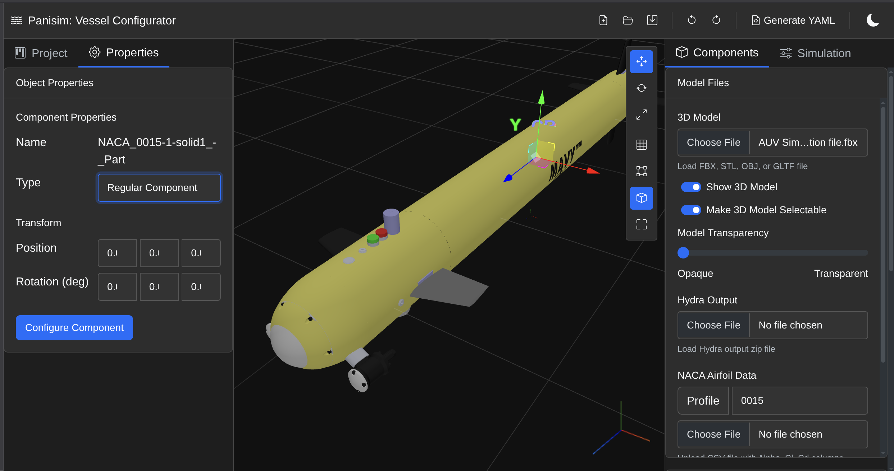
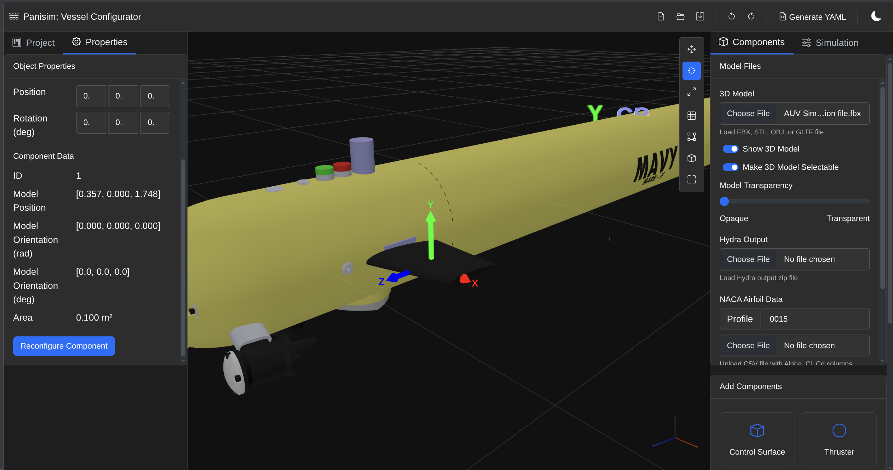
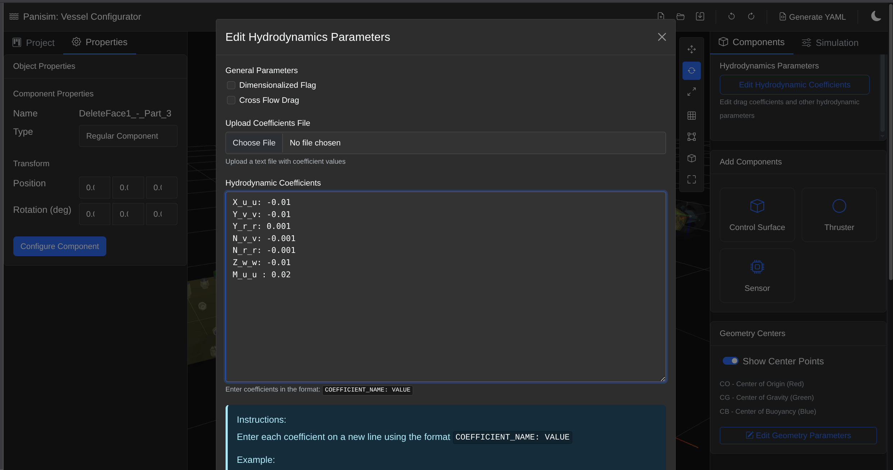
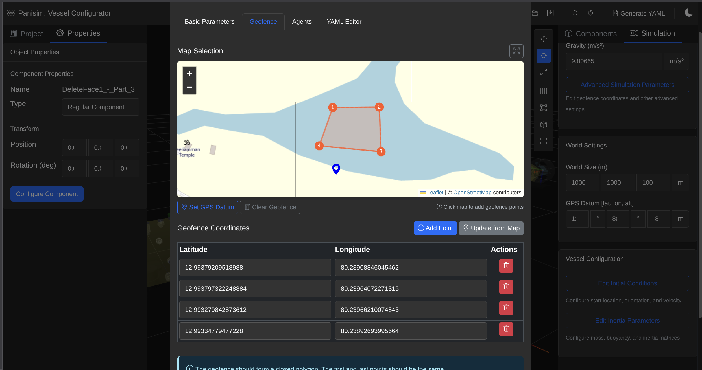

%%{init: {'theme': 'base', 'themeVariables': { 'primaryColor': '#5D8AA8', 'primaryTextColor': '#fff', 'primaryBorderColor': '#1F456E', 'lineColor': '#1F456E', 'secondaryColor': '#006400', 'tertiaryColor': '#fff', 'textColor': '#192230' }}}%%
flowchart TB
User["User Input"] --> Interface["Web Interface<br>(HTML, CSS, JS)"]
Interface --> ThreeJS["3D Visualization<br>(three-setup.js)"]
Interface --> VesselModel["Vessel Data Model<br>(vessel-model.js)"]
VesselModel --> YAMLGen["YAML Generator<br>(yaml-generator.js)"]
YAMLGen --> SimFiles["Simulation Input Files<br>(YAML)"]
classDef user fill:#FF6347,stroke:#8B3626,color:white;
classDef interface fill:#5D8AA8,stroke:#1F456E,color:white;
classDef model fill:#6B8E23,stroke:#2E3B0F,color:white;
classDef output fill:#966FD6,stroke:#4A357A,color:white;
class User user;
class Interface interface;
class ThreeJS,VesselModel interface;
class YAMLGen model;
class SimFiles output;
Vessel Configurator
Overview
The Vessel Configurator is a light weight web-based application that provides an intuitive interface for configuring, and generating input files for the Panisim simulator. This tool eliminates the need to manually create YAML configuration files, offering instead a visual approach to visualize a vessel in 3D and configure its components.
Previosly, without the web GUI, one would have to manually enter entries into the YAML files, which was very time consuming and error prone. The major parameters entered in the YAML files are the position and orientation of the various components such as thrusters, control surfaces, sensors etc. With the Web GUI, you simply load a FBX file into the configurator, select your components and the software logs the position and orientation of the components automatically still allowing you to make modifications. You can select the Centre of Buoyancy, Centre of Gravity and Body Centre visually and Panisim takes care of the frame of reference conversion (to the body frame) automatically.

Tip
The vessel configurator was largely built using AI!
Note
The configurator is still needs development and some features may be unstable. The guidance.yml and control.yml files will still need to be manually edited.
Tutorial
To Quickstart and playaround, you can load the pre-configured mavymini_config.json vessel model in the /inputs/example configurations folder. Or follow the step below to configure your own vessel.
Step 1: Load a Vessel Model
- Open the vessel configurator in your web browser
- Click on the “Choose Vessel” button
- Select the FBX file of the vessel model you want to configure
Now you should see the vessel model in the 3D view.

Tip
The software automatically calculates the length, breadth and depth of the vessel from the FBX file via a bounding box. if possible, you should have your vessel in the configuration used in marine vessels, i.e X axis along the length of the vessel pointing forward, Y axis along the breadth pointing to the starboard and Z axis along the depth pointing downwards.
Step 2: Configure the Vessel
- Select the component (Control Surfaces, Thrusters, or Sensors) you want to configure. It will be slightly highlighted on selection.

- From the left sidebar, switch to the Properties tab and select the component type.
- Configuration modal would appear on selecting the component type.

- Enter the required parameters and click on the “Apply” button.
- The component will then be configured. This can be confirmed if you see a coordinate system assigned to your vessel.

- You should see the position and orientation in the properties tab.
- You can select the coordinate and transform it in the 3D view based on where you want to place it.

For sensors, the orientation have to be how you have mounted it on the vessel.
For control surfaces, the X axis needs to be along the chord, Y axis pointing along the span inwards to the vessel and Z axis completing the right hand coordinate system.

For thrusters, the X axis needs to be along the axis of the thruster, Y axis pointing towards the starboard and Z axis completing the right hand coordinate system.
Everything follows the NED (North, East, Down) coordinate system.
Step 3: Placing the vessel center points
- Make the vessel transparent to see the inside. And untoggle the “Make 3D Model Selectable” option. This will allow you to select the centre points and transform them.

- You can select each of the center points and transform them to the desired location.
- You can also manually enter the coordinates in the
Edit Geometry Parametersin the right sidebar components tab. - The Body Centre [CO], is the point with respect to which all other coordinates are defined. And therefore it must be placed in the NED configuration.
Step 4: Edit Hydrodynamic Coefficients
- Edit the hydrodynamic coefficients in the
Edit Hydrodynamic Coefficientsin the right sidebar components tab. Follow the instructions in the modal to enter the hydrodynamic coefficients.

Step 5: Simulation settings
- Edit all the parameters in the
Simulationtab in the right sidebar.
Note
In the Advanced Simualtion Parameters, you can visually select the geofence boundaries. This also can be further extended to select waypoints in a future release.

Step 6: Upload the Hydra output file (optional, if you are not using cross-flow drag)
You can get your Hydra output file from the HydRA website. And upload the zip folder in the web gui. The generated input file will then contain your Hydra file with correct path.
Step 7: Generate the YAML files
- Click on the “Generate YAML” button in the toolbar.
- The YAML files will be generated and downloaded as a zip file.
- Unzip the file and place it in the
inputsdirectory.
And there you have it! You have successfully configured your vessel and generated the required input files for the Panisim simulator. Some configuration file may require manual edits. Feel free to play around with the Web GUI and extend its functionality.
Software Architecture
The Vessel Configurator provides a complete workflow for creating and configuring marine vessels with the following key features:
- Parameter Configuration: Intuitive interfaces for setting physical properties and simulation parameters, GPS waypoints.
- Component Management: Add, edit, and position thrusters, control surfaces, and sensors
- YAML Generation: Automatic generation of properly formatted configuration files for the simulator
- Validation: Built-in checks to ensure valid component ID configuration
Core Components
- User Interface (
index.html,styles.css,themes.css)- Implements a responsive, CAD-style interface with Bootstrap 5.3.2 framework integration
- Features a component hierarchy with:
- Primary toolbar containing application controls (new/load/save/undo/redo)
- Split-pane workspace with resizable panels using Split.js
- Left sidebar with tabbed project explorer and properties inspector
- 3D viewport with transform controls and visualization options
- Right sidebar with component addition and configuration panels
- Modal dialogs for advanced configuration options and YAML preview
- Supports context-sensitive property editing with dynamic form generation
- Implements theme switching functionality with CSS variables for light/dark modes
- Maintains responsive layout through Bootstrap grid system and custom flex containers
- 3D Visualization Engine (
three-setup.js)- Implements a Three.js-based rendering system with WebGL acceleration
- Configures high-performance renderer with antialiasing, physically correct lighting, and shadow mapping
- Manages scene graph with hierarchical component structure and parent-child relationships
- Features multiple coordinate systems (world, vessel-local, component-local)
- Implements interactive controls with:
- OrbitControls for camera navigation (pan, rotate, zoom)
- TransformControls for direct manipulation (translate, rotate, scale)
- Raycaster-based object selection with visual feedback
- Provides real-time synchronization between 3D objects and data model properties
- Implements custom visual feedback systems including:
- Color-coded component highlighting for selection state
- Local axes visualization for component orientation
- Text sprite labeling for identification and measurements
- Dynamic material updates for selection and hover states
- Optimizes rendering performance using:
- Request animation frame with conditional rendering
- Efficient mesh creation with geometry instancing
- Adaptive resolution scaling based on device capabilities
- Conditional shadow casting based on object importance
- Vessel Data Model (
vessel-model.js)- Implements a comprehensive object-oriented data structure with 1156+ lines of structured code
- Maintains vessel configuration as a deeply nested JavaScript object with strong typing conventions
- Organizes data in specialized subsystems:
- Physical properties (dimensions, mass, centers)
- Hydrodynamic coefficients (added mass, damping, restoring forces)
- Component collections (control surfaces, thrusters, sensors)
- Simulation parameters (time step, environment, boundary conditions)
- Provides transaction-based modification methods with validation:
- Addition, update, and removal operations for all component types
- Auto-incrementing ID allocation for component tracking
- Reference integrity management between components
- Unit conversion and normalization for consistent data representation
- Implements bidirectional mapping between model data and 3D objects using UUID tracking
- Maintains persistence through JSON serialization/deserialization with state version control
- Supports incremental updates through partial property modification methods
- YAML Generator (
yaml-generator.js)- Implements specialized transformation engine for converting vessel model to simulation-compatible YAML
- Features robust numerical formatting with:
- Configurable precision control (4-6 decimal places based on parameter type)
- Unit annotation through comments
- Scientific notation for small coefficient values
- Array formatting with dimension-appropriate representation
- Organizes output into standard simulation file hierarchy:
geometry.ymlwith vessel dimensions and center pointshydrodynamics.ymlwith coefficient grouping by motion direction (X/Y/Z/K/M/N)inertia.ymlwith mass matrix and added mass coefficientscontrol_surfaces.ymlwith NACA profile properties and dynamicsthrusters.ymlwith propulsion characteristics and placementinitial_conditions.ymlwith startup position and velocitysensors.ymlwith instrumentation configuration and noise models
- Generates Docker-compatible file paths for simulator integration (
/workspaces/mavlab/inputs/...) - Performs semantic validation with appropriate warning generation
- Uses JSZip library for creating multi-file archives with proper directory structure
- Utility Modules
gdf-loader.js: Implements parser for Geometric Data Files (GDF) with:- Triangulated mesh conversion
- Hydrodynamic coefficient extraction
- Center of buoyancy calculation from mesh geometry
controls.js: Extends Three.js transform controls with:- Custom snapping behavior for precise positioning
- Event handling for synchronized model updates
- Specialized axis constraints for different component types
- External library integration:
- Three.js (r128) for 3D visualization
- JSZip (3.10.1) for configuration packaging
- js-yaml (4.1.0) for YAML parsing/generation
- Bootstrap (5.3.2) for UI components
- Leaflet (1.9.4) for geofencing and waypoint mapping
- FileSaver (2.0.5) for client-side file downloads